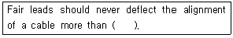
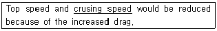
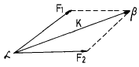
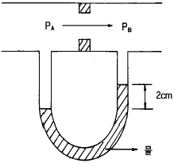
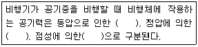

항공기체정비기능사 (2001-04-29 기출문제)
1과목: 비행원리
1. 굴곡작업에 관한 내용으로 가장 관계가 먼 것은?
- 작업표시는 유성펜을 사용한다.
- 굴곡부에 생기는 신축등 광혹한 조건을 받는곳에는 판의 그레인(Grain)방향에 일치시키는것이 좋다.
- 성형점(Mold point)은 접어 구부러진 재료의 안쪽에서 연장한 직선의 교점이다.
- 릴리프 홀(Relief Hole)의 위치는 릴리프 홀의 바깥 주위가 적어도 안쪽 굴곡 접선의 교차부분에 접해 있어야 한다.
(정답률: 59%)

2. 다음 ( )안에 알맞는 말은 ?

- 12°
- 8°
- 5°
- 3°
(정답률: 57%)
3. 헬리콥터의 주회전날개 깃의 피치각이 같을 때 양력의 불균형으로 인해 회전날개가 위ㆍ아래로 움직이게 되는데, 이것을 무엇이라 하는가?
- 플래핑운동
- 코리올리스효과
- 리드-래그운동
- 페더링
(정답률: 80%)
4. SAE(Society Of Automotive Engineers)의 강(鋼)의 분류에서 4130은 무엇을 뜻하는가?
- 탄소 30%와 몰리브덴(Mo) 1%를 함유한 크롬강이다.
- 탄소 130%와 몰리브덴(Mo) 1%를 함유한 몰리브덴(Mo)강이다.
- 탄소 0.30%와 몰리브덴(Mo) 1%를 함유한 몰리브덴(Mo)강이다.
- 규소 0.30%와 몰리브덴(Mo) 4%를 함유한 탄소강이다.
(정답률: 73%)
5. A1합금 RIVET 중 황색은 ?
- 크롬산아연으로 보호도장을 한 것이다.
- 양극처리를 한것이다.
- 금속도료를 도장한 것이다.
- 니켈, 마그네슘선으로 보호도장된 것이다.
(정답률: 52%)
6. 총무게가 4,000㎏인 항공기에 무게 500㎏의 화물을 현 중심위치에서 부터 50㎝ 뒷쪽에다 실었을때,이 항공기의 중심위치는 원래의 중심 위치로부터 어떻게 이동되는가?
- 원래의 중심 위치보다 5.6㎝ 앞쪽으로 이동한다.
- 원래의 중심 위치보다 5.6㎝ 뒷쪽으로 이동한다.
- 원래의 중심 위치보다 12.3㎝ 앞쪽으로 이동한다.
- 원래의 중심 위치보다 12.3㎝ 뒷쪽으로 이동한다.
(정답률: 73%)
7. 항공기용 볼트나사(BOLT THREADS)는 거의 대개가 3등급(CLASS 3)로 제작된다. 3등급(CLASS 3)의 맞춤(FIT)은?
- 루스피트(LOOSE FIT)이다.
- 후리피트(FREE FIT)이다.
- 메디움피트(MEDIUM FIT)이다.
- 크로스피트(CLOSE FIT)이다.
(정답률: 63%)
8. 날개의 평면모양으로 구분한 날개가 아닌 것은?
- 후퇴날개
- 전진날개
- 테어퍼(TAPER)형 날개
- 낮은 날개(LOW WING)
(정답률: 74%)
9. 항공기의 여압동체와 같이 반복하중을 받는 구조는 정하중에서 재료의 극한강도보다 훨씬 낮은 응력상태에서 파단되는데, 이와같이 반복하중에 의하여 재료의 저항력이 감소되는 현상은?
- 좌굴
- 피로
- 크리프
- 응력집중
(정답률: 76%)
10. 회전날개의 깃끝 속도(tip speed)는 공기 역학적인 한계와 소음한계가 주요변수가 되는데 일반적인 깃끝 속도의 제한범위는?
- 약 125m/s
- 약 175m/s
- 약 225m/s
- 약 375m/s
(정답률: 61%)
11. 허니컴 구조부의 검사방법이 아닌 것은?
- 육안검사
- 자분탐상검사
- 코인검사
- 초음파 검사
(정답률: 55%)
12. 부품의 손상형태에서 깊게 긁힌형태로, 표면이 예리한 물체와 닿았을때 생긴것을 무엇이라 하는가?
- 균열(crack)
- 가우징(gouging)
- 스코어(score)
- 용착(Gall)
(정답률: 59%)
13. 조종용 케이블에 터미널 피팅을 연결하는 방법으로 케이블의 강도와 똑같은 정도로 터미널 연결부분을 연결할 때 쓰이는 방법은?
- 5 단 엮기 케이블 이음방법(5 tuck Woven cable splice)
- 랩 소울더 케이블 이음방법(wrap - solder cable splice)
- 니코 프레스 방법(Nico press process)
- 스웨이징 방법(swaging method)
(정답률: 55%)
14. 금속내부에 발생한 입자간 부식을 탐지할 수 없는 비파괴 검사방법은?
- 와전류 검사
- 초음파 검사
- 방사선 검사
- 자분탐상 검사
(정답률: 61%)
15. 헬리콥터에 발생하는 지나친 중간주파수 진동의 원인으로서 적합하지 않은 것은?
- 기계적인 진동흡수 장치의 기능저하
- 변속기 장착 볼트의 부적절한 체결 토큐값
- 적재화물과 동체의 운동 사이에 일어나는 간섭효과
- 회전날개의 회전속도
(정답률: 56%)
16. 티타늄 합금과 알루미늄 합금을 비교한것 중 틀린 것은?
- 티타늄 합금은 알루미늄 합금보다 강도비가 크다.
- 티타늄 합금은 알루미늄 합금보다 내열성이 크다.
- 티타늄 합금의 비중은 알루미늄의 1.6배이다.
- 티타늄 합금은 알루미늄 합금보다 내식성이 불량하다.
(정답률: 75%)
17. 활공기가 고도 1000m 상공에서 양항비 20 인 상태로 활공 한다면 도달할 수 있는 수평활공거리는 몇 m 인가?
- 50
- 1000
- 10000
- 20000
(정답률: 78%)
18. 비행중 양력으로 인하여 날개에 굽힘(BENDING)응력이 발생할 때 날개하면에 작용하는 응력은?
- 인장응력
- 압축응력
- 전단응력
- 비틀림응력
(정답률: 59%)
19. 운항자기무게(Operating Empty Weight)에 속하는 것은?
- 유압계통의 작동유의 무게
- 연료계통의 사용가능한 연료의 무게
- 승객의 무게
- 화물의 무게
(정답률: 62%)
20. 시위 2m인 날개표면을 동점성계수 0.2㎝2/sec인 공기가 50m/sec의 속도로 흘러간다면 이 날개의 레이놀즈수는?
- 5 x 104
- 5 x 105
- 5 x 106
- 5 x 107
(정답률: 52%)
2과목: 항공기정비
21. 기관이나 기관에 부수되는 보기 및 엔진마운트나 방화벽 주위에 접근할 수 있도록 떼었다 붙였다 할 수 있는 덮개를 무엇이라 하는가?
- 트루니온 마운트(Trunnion Mount)
- 파일론(Pylon)
- 공기스쿠우프(Airscoop)
- 엔진 카울링(Engine Cowling)
(정답률: 73%)
22. C급 화재시 사용되는 소화기 중 가장 알맞은 것은?
- CO2소화기, CBM 소화기
- CBM 소화기, 소화전 소화기
- form 소화기, 분말 소화기
- 소화전 소화기, 분말 소화기
(정답률: 71%)
23. 비행기의 동적 가로안정의 특성과 관계가 없는 것은?
- 방향 불안정
- 세로 불안정
- 나선 불안정
- 터치롤
(정답률: 50%)
24. Turn buckle의 나사는 일반적으로 어떻게 되어 있는가?
- 한쪽은 오른나사 한쪽은 왼나사
- 양쪽 다 왼나사
- 양쪽 다 오른나사
- 나사는 한쪽만 있으면 오른 나사이다.
(정답률: 80%)
25. 다이첵크(Dye Penetrant)검사의 절차에서 사용되는 용어가 아닌 것은?
- 사전처리 세척
- 침투처리
- 유화처리
- 현미경투시
(정답률: 67%)
26. Al합금의 방청제는 어느 것인가?
- 크롬화 아연
- 락카
- 과인산 석회
- 가성소다
(정답률: 71%)
27. 작동 부분의 윤활, 브레이크, 타이어 등의 점검은 무슨 점검에 속하는가?
- 비행전 점검
- A점검
- B점검
- C점검
(정답률: 52%)
28. 측정물의 평면의 상태검사,원통의 진원검사 등에 이용되는 측정기기는?
- 버니어 캘리퍼스
- 다이얼 게이지
- 마이크로 미터
- 깊이 게이지
(정답률: 63%)
29. 헬리콥터의 수직꼬리날개를 장착한 이유로서 가장 적당한 것은?
- 빗놀이 모멘트로 반작용 토크를 상쇄시키기 위하여
- 키놀이 모멘트로 토크를 상쇄시키기 위하여
- 옆놀이 모멘트로 토크를 상쇄시키기 위하여
- 키놀이와 옆놀이 모멘트 토크를 상쇄시키기 위하여
(정답률: 53%)
30. 회전날개는 동체토크(TORQUE)를 발생시키는데 이것을 상쇄시키기 위한 구성품은?
- 안정판
- 파일론(PYLON)
- 꼬리회전날개
- 테일붐(TAIL BOOM)
(정답률: 65%)
31. 양력계수는 받음각에 따라 거의 직선적으로 증가하다가 받음각이 매우 커지면 양력이 갑자기 떨어지는 받음각이존재한다. 이 때의 받음각을 무엇이라 하는가?
- 실속각
- 항각
- 처든각
- 영각
(정답률: 75%)
32. 밑줄친 부분을 의미하는 올바른 단어는?

- 최고속도
- 상승속도
- 순항속도
- 경제속도
(정답률: 79%)
33. 항공기가 이륙하여 착륙을 완료하는 횟수를 뜻하는 용어는?
- Block time
- Air time
- Time in service
- Flight cycle
(정답률: 63%)
34. 공장정비(Shop Maintenance)에서 수행되는 정비작업은?
- A 점검(check)
- Engine 교환(engine replacement)
- I S I
- Engine 오버홀
(정답률: 59%)
35. 항공기에 연료를 보급할 때 항공기와 연료보급 차량과의 거리는 최소한 얼마 이상을 띄워야 하는가?
- 1m
- 2m
- 3m
- 5m
(정답률: 63%)
36. 한번사용 되었던 O-ring은 어떻게 처리하는가?
- 겉모양이 좋으면 재사용 가능하다.
- 재사용하면 안된다.
- 2회에 한해서 재사용 가능하다.
- 마모될 때 까지 사용 가능하다.
(정답률: 75%)
37. 비행기 날개골의 양.항력 특성이 좋다는 것은 어떤 의미 인가?
- CLmax가 크고 CDmin이 작다.
- CLmax가 크고 CDmin이 크다.
- CLmax가 작고 CDmin이 작다.
- CLmax가 작고 CDmin이 크다.
(정답률: 71%)
38. 항공기 외부세척의 종류중 틀리는 것은?
- 습식 세척
- 건식 세척
- 광택작업.
- 쇼트 브라스트 세척
(정답률: 66%)
39. 그림과 같은 힘의 합성을 벡터(vector)식으로 나타낸것은? (문제오류로 추후 정확한 원본을 구하면 수정하여 두겠습니다.)

- F1(→) + F2(→) = K(→)
- K = F1 ㆍ F2
- F1(→) ㆍ F2(→) = K(→)
- β-(F1 x F2) = K
(정답률: 51%)
40. 항공용 타이어 구조에서 비드 토우(Bead Toe)란?
- 트레드 절단과 손상을 방지해주는 합성고무 쿠션
- 비드 주위에 부가적으로 만든 고무띠
- 타이어 중심에 가장 가까운 내부 비드의 끝단부분
- 휠 플렌지(Wheel Flange)에 붙는 외부 비드의 끝부분
(정답률: 55%)
3과목: 항공기체
41. 조종계통 케이블(CABLE)의 방향을 바꾸어 주는 것은?
- 풀리(PULLEY)
- 턴버클(TURN BUCKLE)
- 페어리드(FAIRLEAD)
- 벨크랭크(BELL CRANK)
(정답률: 63%)
42. 블록 게이지 측정작업에 관한 내용으로 가장 옳은 것은?
- 검사용은 B급(1급)등급을 이용한다.
- 표준측정온도는 15°정도이다.
- 블록 게이지의 측정력은 접촉면적과는 관계 없다.
- 블록 게이지를 다룰때는 손바닥에 올려놓은 상태에서 여러번 마찰시켜서 밀착시킨다.
(정답률: 42%)
43. 고압가스취급 안전사항중 산소취급시의 안전사항이 아닌 것은?
- 소화기를 비치한다.
- 옷에 묻었을 때 즉시 해독하고 제거해야 한다.
- 환기가 잘되도록 한다.
- 오일이나 그리이스와 혼합하면 폭발위험이 있으니 주의해야 한다.
(정답률: 66%)
44. 크루거 플랩에 대한 설명중 잘못된 것은?
- 기구가 복잡하고 작동장치가 크다.
- 소형 항공기에는 별로 사용하지 않는다.
- 공기역학적으로 슬롯 등과 같은 효과를 갖는다.
- 앞전 플랩에 일반적으로 사용된다.
(정답률: 38%)
45. 조종계통의 케이블(CABLE)이 온도변화 또는 구조(STRUCTURE)변형에 따른 CABLE의 인장력(TENSION)이 변화하지 않도록 설치된 부품은?
- 콘트롤칼룸(CONTROL COLLUM)
- 케이블 텐숀메타(CABLE TENSION METER)
- 케이블 텐숀 레규레이타(CABLE TENSION REGULATOR)
- 턴버클(TURNBUCKLE)
(정답률: 59%)
46. 다음은 조종계통 정비에 대한 설명이다. 틀린 것은?
- 케이블 손상의 주원인은 풀리나 페어리드 및 케이블 드럼과의 접촉에 의한 것이다.
- 케이블 손상은 헝겊을 케이블에 감고 길이 방향으로 움직여 보아 알 수 있다.
- 부식된 케이블은 브러쉬로 부식을 제거한후 솔벤트 등으로 깨끗이 세척한다.
- 케이블 장력은 장력계수의 눈금에 장력환산표를 대조하여 산출한다.
(정답률: 54%)
47. 프리휠 클러치(Freewheel Clutch)를 다른 표현으로는 무엇이라 하는가?
- 오버런닝 클러치(Over Running Clutch)
- 원심 클러치(Centrifugal Clutch)
- 스파이더 클러치(Spider Clutch)
- 드라이브 클러치(Drive Clutch)
(정답률: 62%)
48. 카운터 싱크 리벳(counter sunk rivet)이 주로 사용되는 곳은?
- 내부 구조물에 많이 사용되며 두꺼운 판을 접합하는 데 사용된다.
- 항공기 내부구조의 결합에 사용된다.
- 항공기 외피용으로 사용된다.
- 아무데나 사용된다.
(정답률: 48%)
49. 필요마력이 최소인 상태로 비행할 때의 속도를 무엇이라 하는가?
- 경제속도
- 순항속도
- 종극속도
- 한계속도
(정답률: 64%)
50. 세장비(Slenderness ratio)에 관한 설명중 맞는 것은?
- 기둥의 길이를 단면의 회전 반지름으로 나눈비와 관련이 있다.
- 세장비가 작은 봉은 좌굴강도에 의하여 파괴된다.
- 세장비가 150보다 크면 짧은 기둥이라고 한다.
- 세장비가 90보다 크면 짧은 기둥이라고 한다.
(정답률: 53%)
51. NACA 5자 계열의 날개골을 표시한 다음의 [예]에서 밑줄 친 '20'이 의미하는 것은?
- 최대 두께가 시위의 20%이다.
- 최대 캠버의 크기가 시위의 20%이다.
- 최대 캠버의 위치가 시위의 20%이다.
- 평균 캠버선의 뒤쪽 20%가 직선이다.
(정답률: 54%)
52. 기체구조의 형식에 대한 설명중 틀린 것은?
- 응력외피구조는 내부공간을 크게할수 있고 외형을 유선형으로 할 수 있다.
- 트러스 구조는 대부분 경비행기의 동체 및 날개의 구조에 사용한다.
- 응력외피 구조는 모노코크형과 세미-모노코크형이 있다.
- 샌드위치 구조는 필요한 강도 및 강성을 가지고 있으나 항공기 무게를 증가 시킨다.
(정답률: 60%)
53. 그림과 같이 공기가 흐르는 관에서 압력 PA와 PB의 압력차는? (단, 물의 비중량은 1000kg/m3이며, 공기의 비중량은 무시한다.)

- 20kg/m2
- 20kg/㎝2
- 2000kg/m
- 2000kg/㎝2
(정답률: 39%)
54. 천연고무의 단점을 개선하여 사용되는 인조고무의 종류가 아닌 것은?
- 부틸
- 부나
- 네오프렌
- 폴리에틸렌
(정답률: 59%)
55. 항공기의 설계 제작과정에서 행하는 중요한 시험이 아닌 것은?
- 풍동시험
- 구조시험
- 부식시험
- 비행시험
(정답률: 37%)
56. ( ) 안에 알맞는 말을 순서대로 올바르게 나열한 것은?

- 관성력 - 힘 - 마찰력
- 힘 - 관성력 - 마찰력
- 마찰력 - 힘 - 관성력
- 관성력 - 마찰력 - 힘
(정답률: 54%)
57. 비행기 날개에서의 압력중심에 관한 설명 내용으로 가장 올바른 것은?
- 비행기의 안전성과 날개의 구조강도상 이동이 작은 것이 좋다.
- 받음각에 관계없이 일정하다.
- 캠버 길이의 1/4 정도인 곳에 위치한다.
- 비행기가 급강하할 때 앞으로 이동한다.
(정답률: 39%)
58. 금속재료의 열처리중 뜨임(Tempering)이란?
- 담금질후의 재료를 낮은 임계점 이하의 온도로 가열후 공기중에서 냉각시켜 경화에서 생긴 취성감소
- 재료를 가열후 급속히 냉각시키는 처리
- 기계가공 등으로 생긴 내부응력을 제거하기 위해 높은 임계점이상으로 가열후 대기중에서 냉각시키는 열처리
- 원자의 확산이 활발히 행해지는 임계점까지 가열하여 그 온도를 유지한후 노(Furnace)안에서 서냉하는 열처리
(정답률: 48%)
59. 최소구비장비목록(MINIMUM EQUIPMENT LIST)에 적용되는 것은?
- 비행 조종 계통
- 기관 조종 계통
- 착륙 장치 계통
- 최소 구성부품의 수
(정답률: 70%)
60. 헬리콥터에서 조종사의 조종을 쉽게 하기위한 것과 가장 거리가 먼 것은?
- 플래핑 힌지
- 리드-래그 힌지
- 버핏팅(buffeting)
- 주기적 피치(cyclic pitch)
(정답률: 72%)